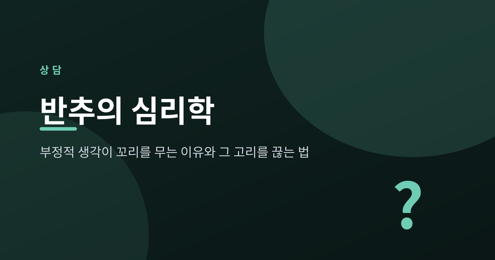
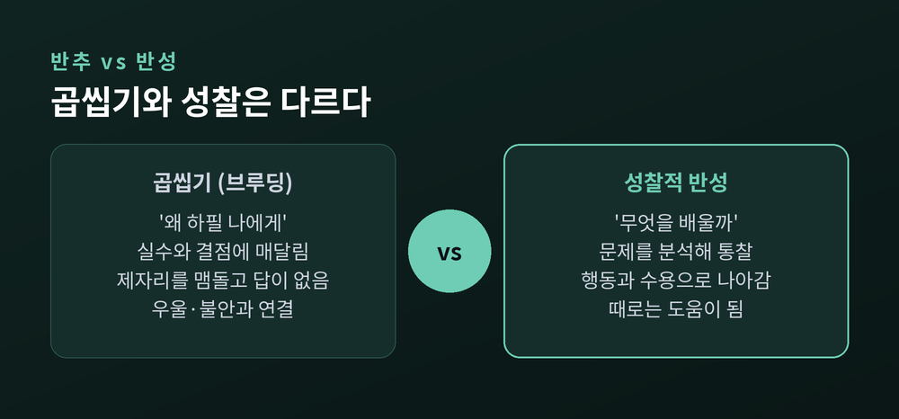
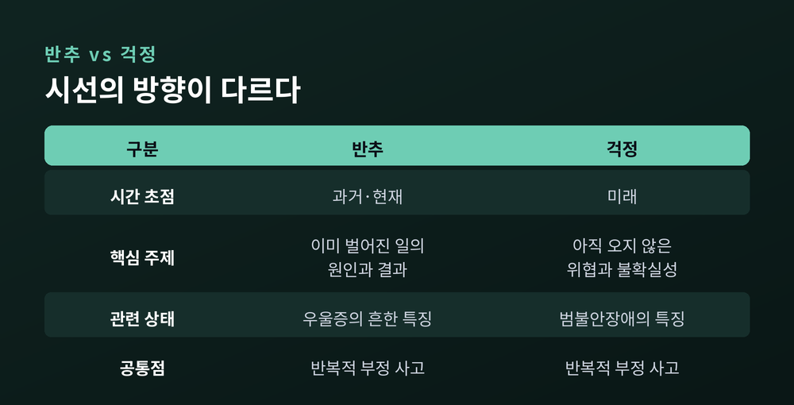
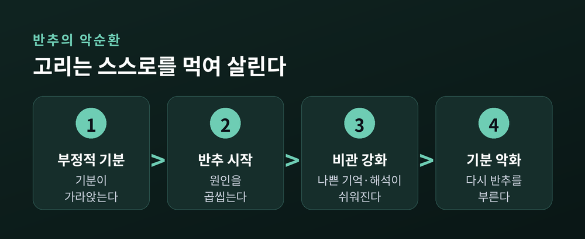
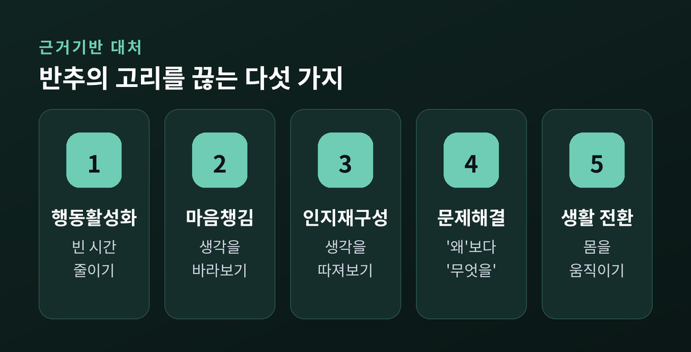
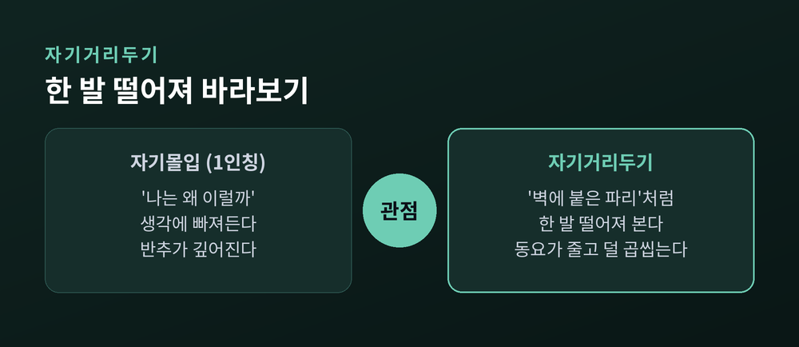

같은 생각이 밤새 머릿속을 맴돈 적이 있으실 겁니다. 이번 글에서는 그 되새김의 정체인 '반추'를 심리학의 눈으로 정리해 보겠습니다. 왜 부정적 생각이 꼬리를 무는지, 그리고 그 고리를 어떻게 끊는지 근거를 중심으로 살펴봅니다.
반추(rumination)는 자신의 고통과 그 원인, 결과에 반복적으로 주의를 집중하는 것입니다.
심리학자 수전 놀런-혹세마는 1991년 반응양식이론을 통해 이를 정리했습니다. 부정적 기분에 빠졌을 때 사람은 크게 두 가지로 반응한다고 보았습니다.
하나는 그 기분을 곱씹는 반추이고, 다른 하나는 다른 활동으로 주의를 돌리는 주의분산입니다.
이론의 결론은 분명합니다. 반추는 우울한 기분을 강화하고 연장시키며, 주의분산은 그 기분을 완화한다는 것입니다.
반추의 특징은 세 가지로 요약됩니다. 반복적이고, 수동적이며, 답이 나오지 않는다는 점입니다.
문제를 붙들고 있지만 해결이나 행동으로 나아가지 못한 채, 같은 자리를 맴돕니다. 이것이 "생각이 꼬리를 문다"는 말의 실체입니다.
여기서 한 가지 오해를 풀어야 합니다. 자기를 돌아보는 일이 모두 해로운 것은 아닙니다.
연구자들은 반추를 두 갈래로 나눕니다. 곱씹기(브루딩)와 성찰적 반추입니다.
곱씹기는 "왜 하필 나에게"라며 실수와 결점에 수동적으로 매달리는 쪽입니다. 우울·불안과 강하게 연결됩니다.
성찰적 반추는 문제를 분석해 통찰과 해결책을 찾으려는 쪽입니다. 해로움이 훨씬 덜하고, 때로는 도움이 됩니다.
반성(reflection)은 여기서 한 걸음 더 나아갑니다. 무언가를 배우려는 의도를 품고 경험을 들여다보는 태도입니다.
차이는 방향에 있습니다. 곱씹기는 "왜 나만 이럴까"에 갇혀 제자리를 돌고, 반성은 "여기서 무엇을 배울까"로 나아갑니다.
예전에는 많이 생각할수록 문제가 풀린다고 여겼습니다. 지금은 압니다. 중요한 것은 생각의 양이 아니라 방향이라는 것을.

반추와 자주 헷갈리는 것이 걱정(worry)입니다. 둘은 닮았지만 시선의 방향이 다릅니다.
반추는 주로 과거와 현재의 일을 곱씹습니다. 이미 벌어진 일의 원인과 결과에 머뭅니다.
걱정은 주로 미래를 향합니다. 아직 오지 않은 위협과 불확실성을 미리 앞당겨 두려워합니다.
두 가지는 뿌리가 같습니다. 심리학은 이를 묶어 반복적 부정 사고라 부릅니다.
임상에서 걱정은 범불안장애의 핵심 특징으로, 반추는 우울증의 흔한 특징으로 나타납니다. 둘은 함께 오는 경우도 많습니다.

반추가 위험한 이유는 그것이 악순환을 만들기 때문입니다.
부정적 기분이 반추를 부릅니다. 반추는 나쁜 기억을 더 쉽게 떠올리게 하고, 상황을 비관적으로 해석하게 만듭니다.
그 결과 기분은 더 가라앉고, 가라앉은 기분은 다시 반추를 부릅니다. 고리가 스스로를 먹여 살리는 셈입니다.
이것은 단순한 의지의 문제가 아닙니다. 뇌에도 흔적이 있습니다.
우리 뇌에는 디폴트모드네트워크라 불리는 회로가 있습니다. 특별한 일을 하지 않고 쉴 때, 그리고 자기 자신에 관해 생각할 때 활발해지는 영역입니다.
뇌영상 연구들을 종합하면, 반추 성향이 강할수록 이 회로의 특정 연결이 과하게 활성화되는 경향이 확인됩니다.
“반추는 게으름이나 나약함이 아니라, 뇌의 자기참조 회로가 과열된 상태에 가깝습니다.”
이 사실은 뜻밖의 위로가 됩니다. 스스로를 탓할 일이 아니라, 다룰 수 있는 하나의 습관이자 과정이라는 뜻이기 때문입니다.

다행히 이 고리는 끊을 수 있습니다. 연구로 검증된 방법들을 소개합니다.
행동활성화 — 가치 있는 작은 일로 하루를 채웁니다. 반추가 파고들 빈 시간을 줄이는 것입니다.
마음챙김 — 생각을 없애려 애쓰는 대신, 판단 없이 그저 바라봅니다. 생각에서 한 발 떨어지는 연습입니다.
인지적 재구성 — 반추를 부추기는 자동적 생각을 붙잡아 사실인지 따져보고, 더 균형 잡힌 해석으로 바꿉니다.
문제해결 지향 — 압도적인 문제를 손에 잡히는 단계로 쪼갭니다. "왜 이런 일이"가 아니라 "지금 무엇을 할까"로 묻습니다.
건강한 주의분산 — 운동, 취미, 사람들과의 만남처럼 몸을 움직이는 전환이 멍하니 화면을 보는 것보다 낫습니다.

여러 방법 가운데 특히 기억할 두 가지가 있습니다.
첫째, 처리 방식을 바꾸는 일입니다. 에드워드 왓킨스의 반추 초점 치료는 "왜?"라는 추상적 물음을 "어떻게?"라는 구체적 물음으로 옮기라고 권합니다.
"나는 왜 이 모양일까"는 답이 없습니다. "다음 한 걸음은 무엇일까"에는 답이 있습니다.
둘째, 자기거리두기입니다. 크로스와 아이덕의 연구는 자신을 '벽에 붙은 파리'처럼 조금 떨어져 바라보라고 제안합니다.
같은 일을 1인칭으로 파고들면 반추가 깊어집니다. 그러나 한 발 떨어져 자신을 3인칭으로 부르며 살피면, 정서적 동요가 줄고 시간이 지나도 덜 곱씹게 됩니다.
작은 실천은 이렇습니다. 마음속으로 자신의 이름을 부르며 "지금 무슨 일이 있는 거야"라고 물어보는 것입니다.

좋은 의도가 늘 좋은 결과로 이어지지는 않습니다. 반추 앞에서 흔히 저지르는 실수가 있습니다.
생각을 억누르기 — 떠오르는 생각을 억지로 밀어내면, 오히려 더 세게 되돌아옵니다.
회피하기 — 불편한 감정을 피하면 잠시 편하지만, 해야 할 일을 미루게 되고 고통은 더 쌓입니다.
혼자 계속 곱씹으며 감정을 되풀이하기 — 감정을 이해하려는 시도조차, 자기몰입 상태에서 되풀이하면 반추를 키웁니다.
솔직히 이 방법들은 저도 오래 붙들었던 것들입니다. 편해 보이지만, 고리를 더 단단히 조일 뿐이었습니다.
정리하면 이렇습니다.
반추는 나약함이 아니라 누구에게나 찾아오는 마음의 습관입니다. 그리고 습관은 방향을 바꿀 수 있습니다.
생각을 멈추려 애쓰기보다, 생각의 방향을 "왜?"에서 "어떻게?"로 돌리고, 한 발 떨어져 자신을 바라보는 연습부터 시작해 보시길 권합니다.
다만 한 가지는 꼭 덧붙이고 싶습니다. 이런 노력에도 반추가 오래 이어지고, 잠과 일상이 흔들리며, 기분이 계속 가라앉는다면 혼자 버티지 않으셔도 됩니다. 전문 상담기관이나 정신건강의학과의 도움을 받는 것은 약함이 아니라 자신을 돌보는 현명한 선택입니다.
밤마다 같은 생각에 잠 못 들던 하루가, 방향 하나 바꾸는 것으로 조금은 가벼워질 수 있다면. 오늘 그 한 걸음을 내디뎌 보시면 좋겠습니다.